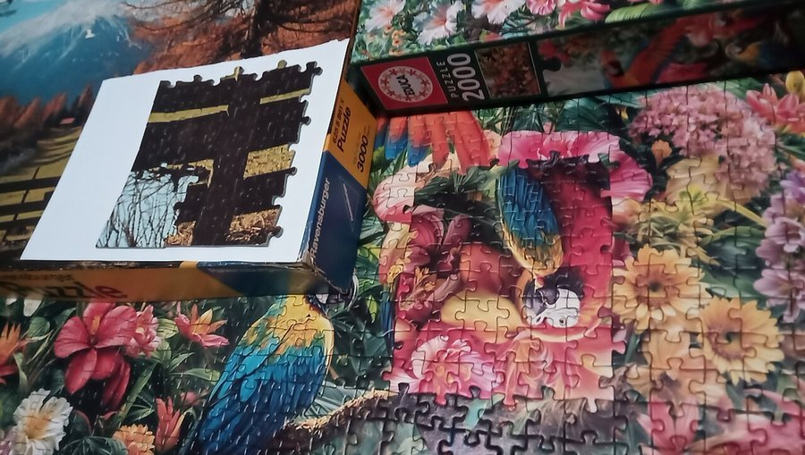

The Tetris Effect: What It Reveals About How Memory Works
Play enough Tetris and you start seeing shapes fall when you close your eyes. That quirk turns out to be a useful window into how the brain files away skills and memories.

Key takeaways
- The Tetris effect is when a repetitive activity, classically Tetris, starts intruding into your thoughts, mental images, or dreams after you stop playing.
- A well-known sleep study found the effect even in people with amnesia who could not consciously recall playing the game, which suggests it runs through a different memory system than the one that stores facts and events.
- That points to at least two separate memory systems: procedural memory for skills and patterns, and declarative memory for facts you can consciously recall.
- The imagery tends to show up at sleep onset, a window researchers think is tied to how the brain processes and consolidates what you practiced that day.
- The effect itself is harmless and doesn't require playing less; it's simply a visible side effect of normal learning and memory consolidation.
Spend a few hours on a puzzle game and something strange can happen later: you close your eyes and see the pieces still falling. That's the Tetris effect, named after the game where it was first widely reported, and it turns out to be more than a quirky party trick. It's a visible clue about how the brain separates the memory of a skill from the memory of the events around it.
What is the Tetris effect?
The Tetris effect describes what happens when a repetitive visual or mental task starts leaking into thoughts you didn't ask for. People who've played a lot of Tetris report seeing rotating shapes when they shut their eyes, mentally rearranging groceries on a shelf like falling blocks, or dreaming about the game itself. It isn't unique to Tetris. Similar reports show up after long stretches with other pattern-heavy games and tasks, but Tetris is the one that gave the phenomenon its name, largely because of a single influential sleep study.
The study that made it famous
In 2000, a Harvard Medical School research team led by sleep researcher Robert Stickgold published a study in the journal Science examining what people saw as they drifted off to sleep after playing Tetris for several days in a row. Many participants reported seeing Tetris-like images and shapes during the hypnagogic period, the drowsy stretch between wakefulness and sleep. That part alone wasn't shocking; people often notice replay-like imagery after an absorbing activity.
The more interesting result came from a second group in the same study: patients with amnesia caused by damage to the hippocampus, a brain region essential for forming new conscious memories. These participants played Tetris too, and afterward most could not consciously recall having played the game at all. Yet several still reported seeing falling geometric shapes as they fell asleep. They couldn't tell you they'd played Tetris, but some part of their brain had clearly registered the pattern.
COMPLEX
The memory formula we rate highest in 2026
One formula combined a fully transparent, clinically-dosed label — citicoline, bacopa, phosphatidylserine and B-vitamins — with a 60-day guarantee.
See Today's Price →Why that result matters for memory science
The amnesic patients' experience is the key to why researchers still cite this study. It suggests the brain stores at least two distinct kinds of memory through different pathways. Declarative memory, sometimes called explicit memory, covers facts and events you can consciously bring to mind, like remembering that you played a game yesterday. That kind of memory depends heavily on the hippocampus, which is exactly what was damaged in the amnesic participants.
Procedural memory works differently. It covers skills, patterns, and habits, things like riding a bike, typing without looking at the keys, or recognizing the shapes and rhythms of a game you've played for hours. This type of memory relies more on other brain structures, including the basal ganglia and cerebellum, and it can form and persist even when the hippocampus isn't doing its usual job. The amnesic patients in the Tetris study couldn't form new declarative memories, but their procedural and perceptual systems still picked up the pattern of the game well enough to echo it back at sleep onset.
Is this the same thing as memory consolidation during sleep?
It's related, though the two aren't identical. Sleep researchers generally believe the brain uses certain sleep stages, and the transition into sleep, to reprocess and strengthen memories formed during the day. The hypnagogic imagery in the Tetris study may be a visible fragment of that reprocessing, a signal that the brain is still working through a pattern it practiced intensively, even before deep sleep begins. Researchers are still working out exactly how much of that imagery reflects active consolidation versus a simpler kind of perceptual replay, so it's fair to treat this as a suggestive finding rather than a fully settled mechanism.
Does the Tetris effect happen with things besides video games?
Yes. People have reported similar intrusive imagery after long sessions of other visually repetitive tasks: assembling puzzles, playing certain sports, coding, and even proofreading text for typos. The common thread seems to be sustained, focused practice on a task with a distinct visual or pattern-recognition component. It's less about Tetris specifically and more about what happens when the brain spends hours tuning itself to notice one particular kind of pattern.
Should you be concerned if it happens to you?
For most people, no. The Tetris effect is a normal, temporary byproduct of intense practice, not a sign of a disorder. It typically fades within a day or two of stepping away from the activity. The main exception worth a second look is when intrusive imagery is distressing, persistent well beyond the activity that triggered it, or shows up alongside sleep problems or anxiety, in which case it's worth mentioning to a doctor since those patterns can sometimes overlap with other conditions worth ruling out.
What this means for learning and memory in everyday life
The practical takeaway isn't that you should play more Tetris. It's that repetition genuinely changes what the brain notices and stores, even below the level of conscious awareness. That's the same underlying principle behind techniques with far more evidence for improving how well you actually retain information you care about, such as spaced repetition and active recall. Both work by giving procedural and declarative memory systems repeated, well-timed exposure to material, rather than a single cram session.
Sleep also plays a supporting role here. If the brain uses rest to file away what you practiced, skimping on sleep after a study session likely undercuts the benefit of the practice itself. Our guide to improving your memory covers the sleep, practice, and lifestyle habits with the strongest evidence behind them, well beyond what any single game or trick can offer.
Frequently asked questions
What causes the Tetris effect?
It's thought to result from intense, repetitive practice on a pattern-based task, strong enough that the brain's procedural and perceptual systems keep processing the pattern even after you stop playing, often surfacing as imagery right as you fall asleep.
Is the Tetris effect the same as a memory?
It's related to memory, but specifically to procedural and perceptual memory rather than the kind of memory you consciously recall. A famous study found the effect in amnesic patients who couldn't remember playing the game at all.
Does the Tetris effect only happen with Tetris?
No. Similar intrusive imagery has been reported after long sessions of other repetitive, pattern-heavy activities, from puzzles to certain sports and visual tasks.
Is it bad for you if it happens?
Generally no. It's a normal, usually short-lived side effect of intense practice. It's worth mentioning to a doctor only if the imagery is distressing or comes with ongoing sleep problems.
Can this phenomenon help me study better?
Not directly, but it illustrates why repeated, spaced practice works. Techniques like spaced repetition and active recall use that same principle deliberately, and they have far more evidence behind them than any single game for improving retention.
Want to support the memory systems behind everyday learning?
Practice, spacing, and sleep do the real work of consolidating memory. For nutritional support alongside those habits, see the memory formulas our editors rate highest for 2026.
See the Top 5 Memory Formulas →Related: Spaced repetition explained · Active recall: the study method that works · How to improve your memory · Best memory formulas of 2026